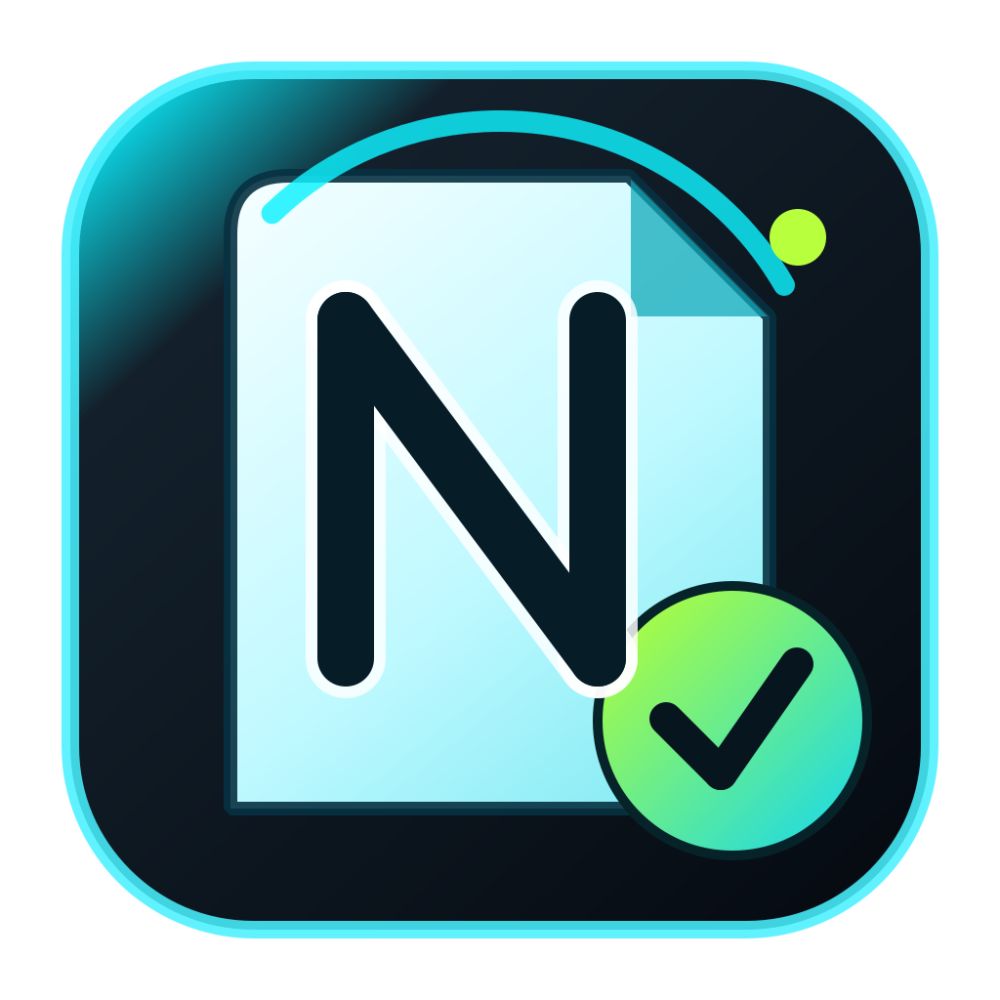

Release channel
Download oficial
Verificado

Esta página centraliza os formatos de download, o canal de release e o acesso ao novo portal, para que a jornada de instalação pareça parte de um produto premium e não um improviso técnico.

Melhor caminho para usuários finais, ativação e suporte.
Fluxo principalÚtil para validação, laboratório, suporte e comparação manual.
Uso avançadoEntre para configurar workspace, revisar status e preparar a jornada SaaS.
Camada webO modo essencial foi projetado para computadores modestos; recursos avançados são opcionais e ativados sob demanda.
Edição de 64 bits em processador x64 compatível.
Para organização, pesquisa, RAG local e recursos essenciais sem especialistas pesados.
A Central Neuro adapta contexto, processamento e inteligência local à capacidade disponível.
Os artefatos devem sair do canal oficial, do repositório de releases ou do instalador aberto pelo próprio app.
Evite cópias redistribuídas ou anexos de terceiros sem contexto.
Notas, hash e arquivos publicados juntos reforçam a percepção de produto sério.
Portal, licença e suporte passam a conversar melhor entre si.